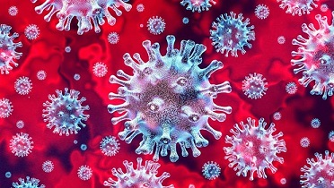
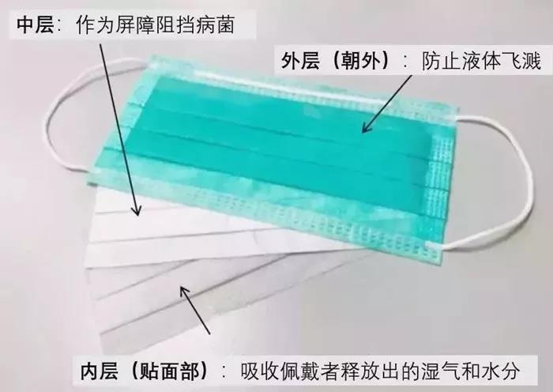

冠状病毒存活体内37天，塑料3天，包裹有毒？如何杀“毒”
最新研究显示，新型冠状病毒可在人体内存活长达37天。

19位中国医生组成的研究团队分析191例武肺患者的临床症状，研究团队发现，冠状病毒在重症（severe）患者体内的存活时间平均为19天，在危急（critical）患者体内平均存活24天。死亡患者直到临死前，都可在其呼吸道中检测到冠状病毒。
总体而言，该病毒存活在幸存患者体内的时间中位数（median duration）为20天，最短的天数为8天。最令人震惊的是，在某些情况下，该病毒存活在幸存者中的时间可长达37天。
目前，全球各国公卫官员大多数采取14天隔离检疫措施，这项研究成果似乎暗示需要更长的隔离时间。不过美国CBS新闻医学专家戴维‧阿格斯博士（David Agus）认为现在下定论还太早，必须再做更谨慎的评估。
世界卫生组织（WHO）周五指出，目前还不太可能说2019冠状病毒疾病（COVID-19，冠状肺炎）大流行何时将达到高峰。
气溶胶（气溶胶是指在空气中悬浮的颗粒物，颗粒直径一般小于100微米(0.1毫米)。）中新冠病毒可存活3小时 塑料不锈钢表面2到3天，研究人员将新冠病毒的上述测试结果与严重急性呼吸道综合征(SARS)病毒进行对比，两者在气溶胶及物体表面存活时长相似。
研究表明，雾化新冠病毒和SARS病毒的稳定性非常相似，能在气溶胶中存活3小时，在铜表面则能存活4小时，纸表面24小时，塑料或不锈钢表面则长达2到3天。
美国科学家3月10日发表论文结果表明，雾化新冠病毒在气溶胶中3小时后仍有存活，在铜表面则能存活4小时，纸表面24小时，塑料或不锈钢表面则是2到3天。研究作者表示，根据存活时间，新冠病毒和SARS病毒的稳定性非常相似，完全可以通过气溶胶或污染物进行传播。该论文尚未经同行评议。
研究人员说，当病毒悬浮在小于5微米的飞沫中（即所谓的气溶胶）时，它可以悬浮大约半小时，然后落下来并停留在物体表面长达数小时。这一发现与世界卫生组织的立场尤其不一致——他们认为病毒不会通过空气传播。数周来，专家们一直认为病毒不会通过空气传播。但事实上，这种病毒可以在空中悬浮半小时左右。
这种病毒在塑料和钢铁上存活时间最长，可达72小时。这段时间内存活病毒的数量会急剧减少。它在铜上仅可存活4个小时。在硬纸板上，病毒可以存活最多24小时，这意味着邮件包裹上的病毒含量应该很低，除非投递者咳嗽或打喷嚏，或者用携带病毒的手处理过货品。
目前尚不清楚为什么硬纸板对病毒的耐受性不如塑料或钢，但可能可以用这些包装材料与其他表面相比吸收性或纤维质量不同来解释。

当我们身边的人咳嗽几下不免让人心惊胆颤，我会因为这样感染新冠病毒吗?现在随着气温的慢慢回升，蚊子也开始慢慢恢复活力，它会传播新冠病毒吗?
飞沫，是新冠病毒传播的秘密武器。飞沫多为直径大于5微米的含水颗粒，它可以通过一米之内的距离进入易感的黏膜。在任何易感的黏膜表面直接着陆，比如嘴唇、眼睛、鼻腔等等。
如果一个新冠肺炎确诊病人的飞沫飞出并且找到合适的地方着陆，那么……新冠病毒可能就会被传染开。
日常生活中咳嗽、打喷嚏或者说话都可能会产生飞沫。
一个喷嚏可以喷出10000个以上的飞沫，最远传到8米以外!
而咳嗽可产生1000-2000粒飞沫，最远6米!
即使是平静的说话，每分钟也会产生大概500粒飞沫。
其中100微米以上的大飞沫由于足够重，会在10秒内落在地上。而小飞沫成为干燥的飞沫核(即气溶胶)后会在空气中飘荡，造成远距离的传播。值得注意的是，在相对封闭的环境中长时间暴露于高浓度的气溶胶情况下存在经气溶胶传播的可能。
不过，由于飞沫传播距离很短，一般在一到两米，因此不会在空气中长期漂浮。
也就是说，如果我们戴口罩，与他人保持至少一米的距离，基本是安全的。
另外，保持通风也很重要，坚持每天开窗通风至少两次(每次不少于30分钟)。在通风量很大的自然通风下，空气中万一存在病毒气溶胶，则会被稀释到一定程度，感染风险也会降很低。
什么样的接触传播会感染新冠病毒?
接触传播包括直接接触和间接接触两种。直接接触是指皮肤或黏膜直接接触患者或病毒携带者，我们最常说的直接接触传播包括接吻和性交。
而间接接触，江苏疾控中心举例来说，就如一个新冠病毒携带者冲门打了喷嚏或咳嗽，而这些喷嚏的残留物留在了门把手上。紧接着另一个健康的人触摸了门把手后没有洗手，就立刻用手拿食物放进嘴里吃，或揉了眼睛、挖了鼻屎等。这样，新冠病毒可能就会沾染在皮肤和黏膜上，通过间接传播的方式让下一个人感染。
也就是说，如果健康人不小心接触了患者或病毒携带者的痰液、血液、呕吐物、体液、分泌物等，或接触了被这些体液污染的物品，比如门把手、楼梯扶手、电梯按钮、手机、电脑、玩具等，再接触口鼻都有可能被感染上新冠病毒。
这也就是为什么我们反复强调要按照七步洗手法认真洗手，有条件的随身携带免洗手消毒液的原因。江苏疾控中心表示。
因为，在间接接触中，我们的手常常扮演着重要的传播媒介，如果手干净了那么传播自然就被切断。
另外，江苏疾控中心表示，接触到病毒并不意味着已经发生感染。
病毒需要在人体内寻找到一个含有酶的受体，这种受体相当于它的通行证，有了这个通行证它就可以在其他含有酶的黏膜细胞上顺利“着陆”，完成结合并侵入细胞内部。
那么，新冠病毒的受体叫做：血管紧张素转化酶2，简称为ACE2。
新冠病毒可以凭借ACE2这张通行证，“着陆”在含有大量含有这种酶的黏膜细胞上，比如：嘴唇、眼皮、鼻腔和口腔等。
当病毒接触了这些黏膜后，感染才真正开始。所以手接触到公共物品一定记得要洗干净再触摸口鼻。
新冠病毒有时可能会离我们很近，但不用害怕，只要我们正确配戴口罩，勤洗手，不用脏手接触口鼻，我们还是比较安全的。
蚊子会传播新冠病毒吗?
世界卫生组织对蚊子是否可以传播新冠病毒表示：尚未发现新冠病毒可以通过蚊子传播的证据
在普通人的想法中：蚊子“嗡嗡”飞来，吸了新冠肺炎感染者的血，满足地再“嗡嗡”飞走，又去吸健康人的血，似乎就完成了一次传播?
江苏疾控中心表示，实际并非如此。
蚊子传播病毒过程相当复杂，并不是简单的像注射器一样把病毒从病人血里吸出来再注射到健康人血液里。
病毒在蚊虫体内要经过增殖、突破中肠屏障和唾液腺屏障等一系列过程才能进入到另一个人体内。
能完成这一过程的病毒都有特定的特征，即所谓的蚊媒病毒，而蚊媒病毒里并不包括冠状病毒。其他如艾滋病毒、流感病毒等都不能通过蚊虫传播。
新冠病毒通过蚊虫传播的可能性极低，新冠病毒属于冠状病毒科冠状病毒属，这一类病毒只感染脊椎动物(蚊子是无脊椎动物)。而且新冠病毒主要通过呼吸道飞沫和接触传播，目前也尚未发现新冠病毒可以通过蚊子传播的证据。
因此，从冠状病毒的感染对象和已知的新冠病毒传播途径均可以判断新冠病毒通过蚊子传播的可能性极低。
蚊子不容易传播新冠病毒，但不代表蚊子不厉害。随着春季的到来，万物复苏，蚊子也开始蠢蠢欲动，在为传播登革热等各类蚊媒病做准备了。
我们还是要趁早清除各类容器和以及周边环境的积水，让蚊虫无处孳生和繁殖，降低夏季蚊媒病传播流行的风险，减少对人们生活的骚扰。
新冠病毒是否会“吸附”在衣服身上？
一则传言说的煞有其事，认为带毛领、绒线类型的衣服外套，更容易吸附病毒；
但实际上，新冠病毒在衣服上存活的时间比较短，短的可能几分钟，长的则会持续几小时不等，越是光滑的地方，病毒也就越容易存活。
总而言之，通过衣服传播病毒的几率非常小，哪种材质衣服会更容易感染的意义也并不大，不过对于附上新冠病毒，目前有2种说法，仅供参考：
第一，衣服材质越光滑，病毒存活时间越长
事实上，新冠病毒本身存留时间较短，从理论而言，由于病毒本身需要一定水分来保持自己结构，而光滑无孔表面，水分子可以很好保持。
因此，越光滑表面，病毒的时间要比粗糙的表面存活时间要长，多孔表面会降低病毒的感染活性。
第二，容易产生静电的衣服更容易吸附病毒
由于衣服有静电，因此外界种的杂质、灰尘等物质吸附到衣服上，这些吸附物可能会夹带着病毒。
因此相对而言，越容易产生静电的衣服，沾染到病毒也就越多，例如尼龙面料、化学纤维面料等容易产生静电的材料。
那么，我们到底如何做才能最大程度的保护我们自己，预防冠状病毒呢？
1. 人们需要勤洗手，洗手正确方法是：用洗手液（肥皂）和流动的水洗手至少15秒钟。
2. 日常不要用手触摸脸部（嘴唇、眼睛、鼻腔）。最好的办法就是戴口罩，穿防护服（如去医院或者易感人群场所），带眼罩。
3. 在没有水和洗手液（肥皂）的情况下，我们可以使用含有酒精（高于60%酒精含量最佳）的手部杀菌剂。
4. 避免与病人接触，尽量不要前往拥挤的地方。咳嗽或打喷嚏时，使用一次性纸巾或胳膊肘内部遮住口鼻。
5. 在使用医用酒精对衣服进行消毒，注意其安全操作，避免火源以及注意室内酒精浓度等。外出后衣服要挂在通用条件较好的地方。
6. 若在有条件的情况下，可以洗澡一次以免病毒在周围潜伏。
7. 间接接触传播指间接接触了被污染的物品所造成的传播，这些物品主要有门把手、楼梯扶手、桌面、手机、玩具、笔记本电脑、公共空间台面等。可以使用稀释后的消毒液、酒精等方式来进行消毒。
8. 要注意的是我们的手机，一般手机壳的材质是塑料，要知道，塑料表面是病毒吸附时间最长的材料之一，忽视了给手机进行消毒，摸过手机的手接触口鼻、眼睛，也有被感染新型冠状病毒的可能。
关于口罩，有几点要说明的：
1. 选择口罩尽量选择正规厂家的产品，其中一个简单的鉴别方法就是：如果能开正规发票，就算是假的，我们也有证据维权了。欧洲销售的产品要注意是否有CE标识！
2. 有阀和无阀的口罩的选择：医护人员由于长时间接触易感人群，有可能随时被感染，所以必须使用无阀口罩（无阀口罩对吸进和呼出的气体同使起到过滤作用）， 有阀口罩过滤等级一般来说要高于无阀口罩。
3. 口罩的防护等级：N99口罩（等同于欧洲标准FFP3）>N95口罩 （等同于欧洲标准FFP2）≈KN95口罩> 医用外科口罩 > 医用防护口罩 > 普通医用口罩>普通防护口罩>纱布口罩

口罩使用注意事项：
（一）呼吸防护用品包括口罩和面具，佩戴前、脱除后应洗手。
（二）佩戴口罩时注意正反和上下，口罩应遮盖口鼻，调整鼻夹至贴合面部。
（三）佩戴过程中避免用手触摸口罩内外侧，应通过摘取两端线绳脱去口罩。
（四）佩戴多个口罩不能有效增加防护效果，反而增加呼吸阻力，并可能破坏密合性。
（五）各种对口罩的清洗、消毒等措施均无证据证明其有效性。
（六）一次性使用医用口罩和医用外科口罩均为限次使用，累计使用不超过8小时。职业暴露人员使用口罩不超过4小时，不可重复使用。
- 上一篇：3.25疫情数据（国内，全球，欧洲）皇家墨尔本医院建议 2020/3/25
- 下一篇：3.6疫情统计（全球 欧洲 中国）洗手液选择 2020/3/6